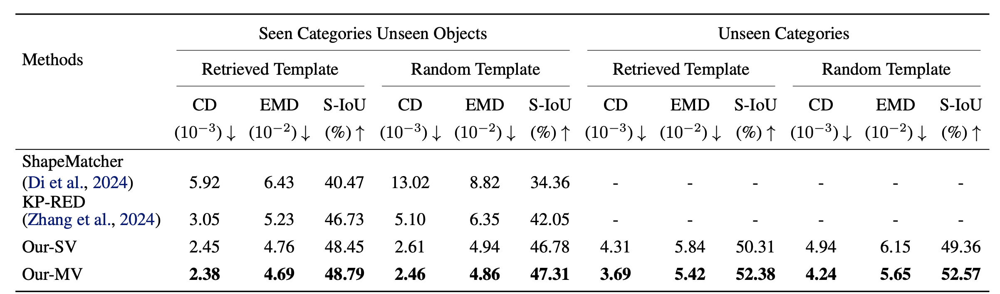
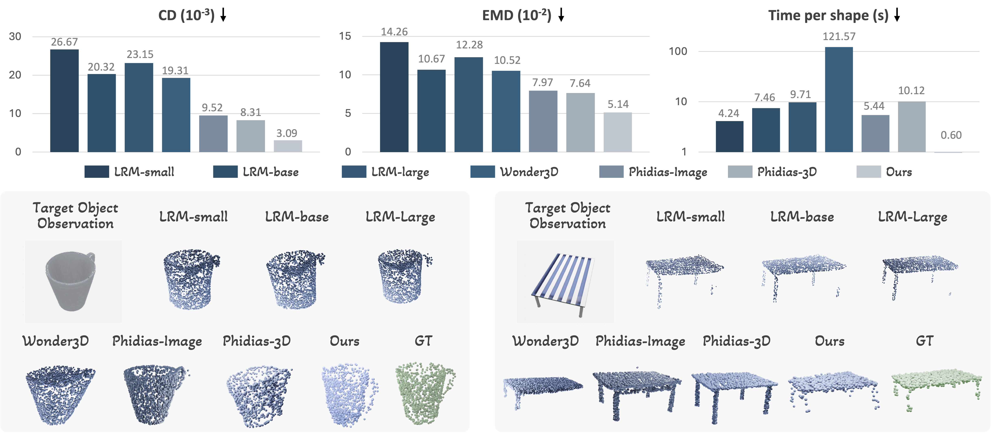

Results
Deformation quality
On both seen and unseen categories, our method achieves lower Chamfer distance and EMD and higher silhouette IoU than deformation baselines. Under the Random Template setting—where baselines degrade sharply—our geometry-guided modeling maintains performance similar to Retrieved Template, indicating robustness to large template–target variation.

using single-view template and multi-view template feature fusion, respectively.

Comparison with 3D generative reconstruction
Compared to large reconstruction models, our template deformation better preserves plausible structure under occlusion (e.g., mug handles, chair legs) by leveraging the template topology.

Application to robotic dexterous manipulation
A distinct advantage of our deformation-based framework is the inherent preservation of dense point-wise correspondence, which naturally facilitates downstream tasks such as dexterous grasp transfer. We leverage the predicted deformation fields to warp contact maps from templates to novel targets, guiding the optimization of grasp configurations for arbitrary robotic hands. This transfer-based dexterous grasp generation process requires only about 0.67 s for deformation prediction and 15 s for contact-based grasp recovery. We further demonstrate the practical applicability of our approach through real-world physical experiments on a NAVIAI AW-1 humanoid robot.